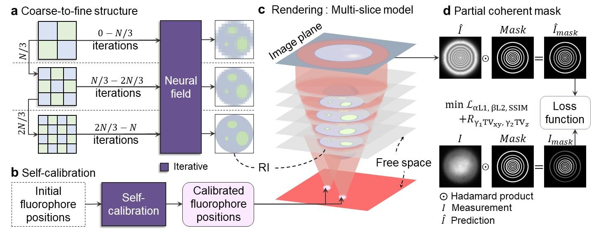
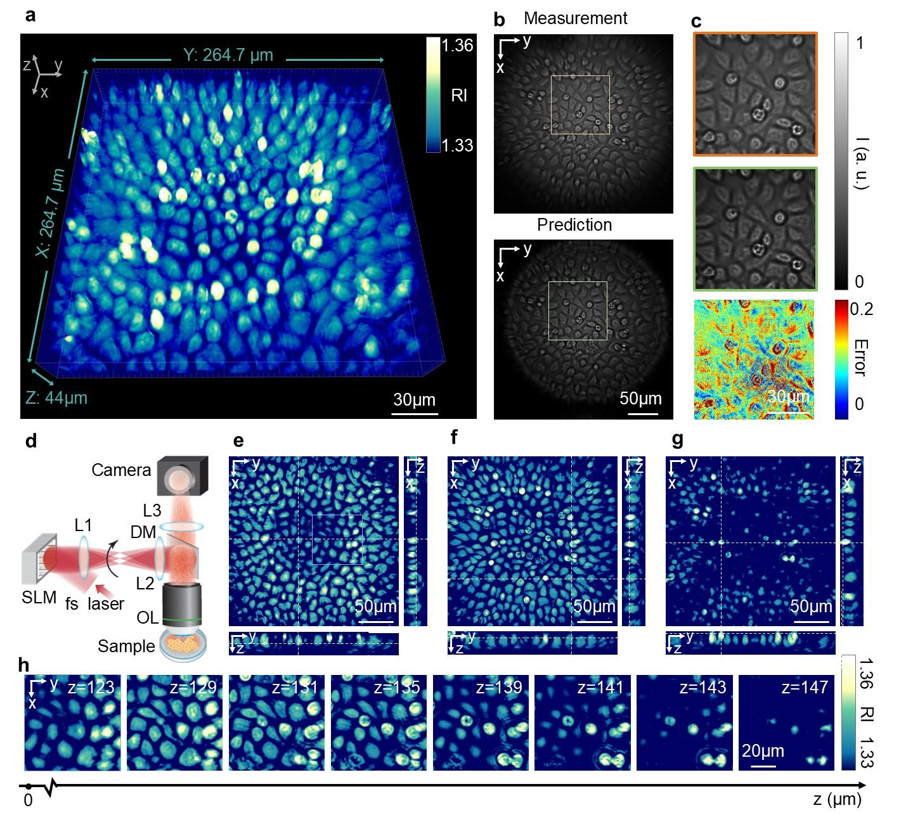
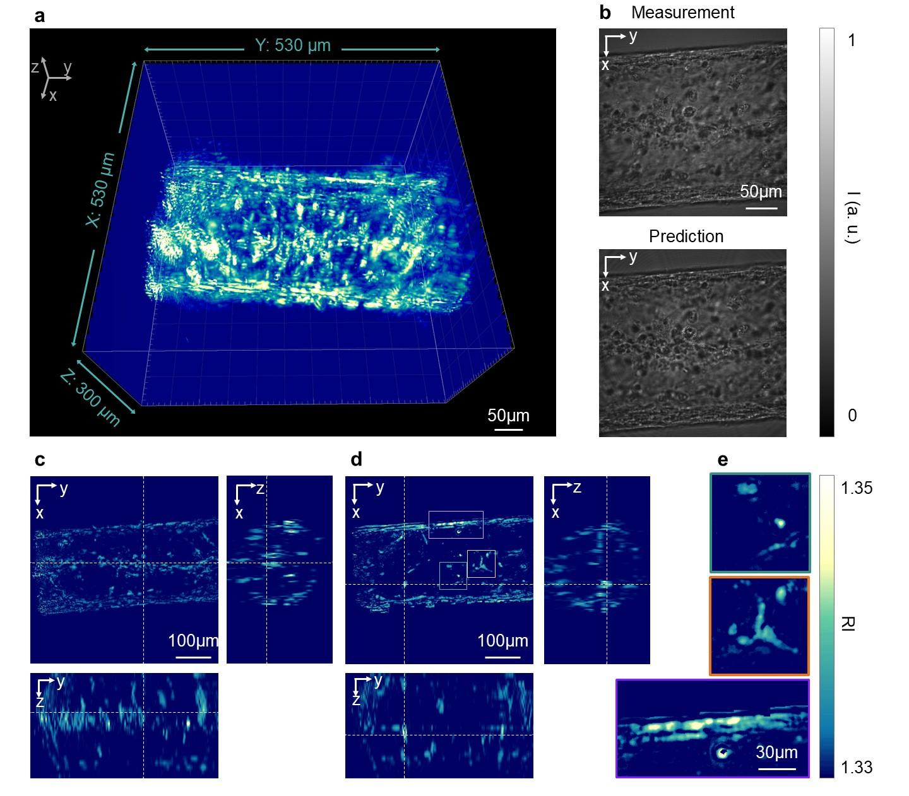

Overview

Overview of FDT using explicit neural fields.
a, The coarse-to-fine structure represents the unknown refractive index (RI) with neural fields and resolves it through three stages of increasing resolution as the number of iterations increases. b, Self-calibration is applied to localize the fluorophore positions, starting from an initial estimation by Gaussian fitting. The positions are then set as iterative parameters and optimized during the training process. c, The rendering equation is based on a differential multi-slice model, which takes two inputs: the RI from a and the fluorophore positions from b. The model calculates the light field as it is modulated by the heterogeneous RI on each slice using the Born approximation. Fresnel propagation is used to calculate light propagation between slices. d, A partially coherent light mask is generated by computing the light field on the image plane without the heterogeneous RI and then binarizing the light field to create the partially coherent mask. The masks are applied to both the predicted and measured images. The masked images are used to calculate the loss function, incorporating L1, L2, SSIM, and regularization terms.
Results
We verify the validation of our model as well as each component in the model under the simulation 'ucdavis' data. Then, we applied the FDT to experimental data of thin (MDCK) and thick (3D muscle tube) sample to show the effectiveness of our model for variety of structure and z-section ability.
UCDavis

Reconstruction of the 3D RI of a simulated "UCDavis" pattern.
a, Reconstructed 3D RI distribution of the "UCDavis" pattern in 3D from 400 fluorescence images. b, A representative ground-truth (GT) image, generated using the multi-slice model with the ground-truth 3D RI, where the RI of the letters is 1.38 and the background is 1.33. c, The predicted fluorescence image under the same illumination as b with the reconstructed 3D RI. d, Zoomed-in views of the regions within the orange and green boxes in b and c, respectively. The SSIM and PSNR between the ground-truth and predicted images are 0.9994 and 56.9062, respectively. e, Results of self-calibration of the positions of fluorescent sources at 50, 100, and 150 iterations. The blue circle indicates the irradiated region from the ground-truth position of the excited fluorophore, and the white dashed line indicates the irradiated region from the predicted position of the fluorophore. f, The plot on the right shows the MSE loss between the self-calibrated and ground-truth fluorophore positions, converging to 0.001 within 500 iterations, indicating successful self-calibration of the positions of fluorescent sources. g, Comparison of the ground-truth RI (top row) and the predicted RI (bottom row) on each z-plane, as indicated by the axis below. h, Effect of the coarse-to-fine structure on reconstruction results on two different z-planes (top row, z = 65 μm; bottom row, z = 53 μm). The first three columns show results of the coarse-to-fine structure at different iterations (100, 200, and 300) with progressively increasing sampling grid at 128 × 128, 256 × 256, and 512 × 512 pixels. The last column shows the results after 300 iterations without the coarse-to-fine structure at a sampling grid of 512 × 512 pixels. Comparing the third column and the fourth column, the coarse-to-fine structure mitigates crosstalk between z-planes and reconstructs the missing low-frequency signals.
MDCK
3D RI reconstruction of a thin layer of live MDCK Cells sample.
a, 3D visualization of the RI distribution of MDCK cells within a 358.4 × 358.4 × 44 μm3 volume. The RI of the cells ranges between 1.33 to 1.36. b, Comparison of the measured (top) and predicted (bottom) images. c, Zoomed-in views of the highlighted region: the measured image (top), the predicted image (middle), and the error map between the measured and predicted images (bottom). d, Schematic diagram of the optical setup of FDT. Fluorescence is excited by scanning a focus with a spatial light modulator (SLM), and diffracted fluorescence images are captured in reflection mode using a camera. e-g, Cross-sectional views of the RI distribution of MDCK cells on three representative planes that are 12.5 μm apart, showing optical sectioning ability and high 3D resolution. h, Zoomed-in view of the image z-stack of cells in the highlighted region in e. The z-position of each image is labeled on the z axis below the images. The images again highlight the optical sectioning and high resolution of FDT.
3D view
3D tube
3D RI reconstruction of a 3D cultured bovine myotube.
a, 3D visualization of the RI of 3D cultured bovine myotube within a volume of 530 × 530 × 300 μm3. b, Comparison of the measured (top) and predicted (bottom) images. c-d, Cross-sectional views of the reconstructed RI on two representative planes, showing high resolution and optical sectioning ability. e, Zoomed-in details of the highlighted regions in d, labeled by corresponding colors, showing different morphologies of the 3D cultured bovine myotube during proliferation and differentiation. The results indicate that FDT can accurately reconstruct various structures across a wide range of spatial frequencies. See the video in the supplementary material for a better 3D visualization.
Axial Rotational Perspective
Radial Rotational Perspective
Radial Rotational Perspective
BibTeX
@misc{he2024fluorescencediffractiontomographyusing,
title={Fluorescence Diffraction Tomography using Explicit Neural Fields},
author={Renzhi He and Yucheng Li and Junjie Chen and Yi Xue},
year={2024},
eprint={2407.16657},
archivePrefix={arXiv},
primaryClass={physics.optics},
url={https://arxiv.org/abs/2407.16657},
}